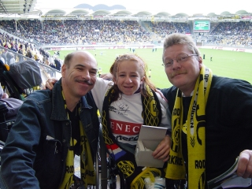
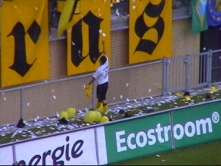

|
Roda JC - RKC (1-0) 25 mei 2003 |
Voor het eerst in de historie waren er meer dan
150 supporters van RKC in ons stadion.
Een ballonnenactie op zuid.
Choreografie op west.
En alweer was er een delegatie van Mechelen
waarvoor hulde!
Sergio neemt een hoekschop.

Cornelisse van RKC werkt de bal al vallend
voorbij zijn eigen keeper: 1-0.
JOOL = JOOL

RKC maakte veel smerige overtredingen. Voor
enkele daarvan was rood op zijn plaats. Wegereef
"beperkte" zich tot 4 maal geel voor RKC en
twee maal geel voor Roda.
Schitterende redding van Kujovic die een puike
wedstrijd keepte.

In de pauze zochten we Janine op die momenteel
actie voert tegen het onhandige invaliden-beleid
van Roda (zie RodaWorld).
Sergio scoort vanuit buitenspelpositie.

Hij jubelt derhalve vergeefs.
Cristiano verprutst een 100% kans.
Sfeerbeeld uit Z16.
De eindfase is zenuwslopend. Liefst 4 minuten
extra tijd wordt gegeven. De ontlading is dan ook
groot als het eindsignaal klinkt.
Iedereen blij want Roda blijft in de race voor
Europees voetbal!
For all your tattoos, piercings and jewelry ;-)
RKC BEDANKT
Tja, die wat bewaart, die wat heeft......
De KO was afgeladen vol.
Danniëlle telefoneert met een bekertje bier.
Vrolijke supporters rond een lodderige Ioannis.
Butcher komt de trekking van de FP-loterij doen.
Kick-Off gasten.
Nogmaals bedankt!
Een potentieel Rodameëdsje.
Let niet op deze gasten, het echte orkest speelt
op de achtergrond.
MFF
I'll gladly handle you with care ;-)
Hoedjesreclame.
D. met het nationale shirt van Nieuw-Zeeland en
een hoedje met sluikreclame voor deze site.
Behalve uit Mechelen waren er
vanmiddag ook een aantal gasten uit
Anderlecht op bezoek.